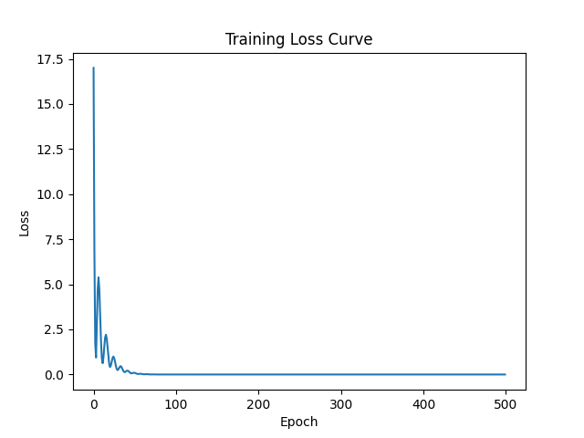

Refactored manual logic into a modular PyTorch architecture using classes and automated optimizers.
nn.Module to encapsulate model parametersnn.MSELoss and optim.Adamnn.Parameter for automated gradient trackingRefactored Loss Curve (Observe Adam's momentum/oscillations):
